先に言っておきます
多分過去最高の長さです（ ; ; ）
だからお茶でも飲みながら読んでね。
すたーと！
前回の記事は
たくさんのコメント
本当にありがとうございました！
たくさんの方に
お誕生日おめでとうしてもらえて
ひめたんほんとに幸せです。
13日は握手会してライブして
日記のたくさんのコメントを読んで
アイドルらしい誕生日だったなと思います＊＊
18さいになったひめたんも
どうぞよろしくお願いします
ひめたんびーむ(<・ω・>)
さて日曜日は全国握手会&アンダーライブでした！
たくさんの方に遊びに来ていただきました
本当にありがとうございました( ^O^ )
握手会は
かなりん(中田花奈ちゃん)とぺあ
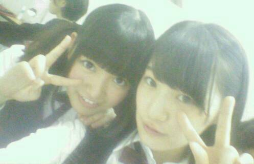
ひめたんびーむ ぺろぺろびーむ
気づいた方もいらっしゃったかもしれませんが
体調が万全ではなくて
申し訳なかったです(´；ω；｀)ごめんなさい
かなりんファンのみなさん
仲良くしてくださってありがとうございました
またぺあになったらよろしくです
ひめきゅんさんもありがとうねー
名札してくれるひと率も増えてきて
ひめは嬉しゅうよ！またよろしくねー♪
そして握手会のあとは
楽天さん主催で
アンダーライブをさせていただきました
ああなんて幸せなんでしょう(´；ω；｀)
私たちの今の実力を身を持って感じたのと同時に
今後の目標とかも見えてきたライブでした
アンダーライブは
私たちが考えて話し合って作り上げたものだから
本当に愛おしいというか
手作り感がたまらなく気持ちよかった(・∀・)
みんながそれぞれに
大切な思いがあるんですね＊＊
そうだなーひめたんの目線から
アンダーライブを語るとするならば
ほら、アンダーメンバーって
何かと悔しい思いをすることが多いんですよね
アンダーだってこんなに頑張ってるのに...とかね
だから今回アンダーだけでステージに
立つことができる環境を作って頂いたことが
本当に嬉しくて。
みんなのブログ見てたら
大変だったこととかもいろいろ伝わってくるけど
本番直前の私には断然わくわくが勝ってたなー
久々に緊張しました(´・ω・｀)
ライブなんてそう緊張することないこの私が。
この場を用意してくださった楽天さんと
スタッフさんと、それから
記念すべき第一回アンダーライブに
立ち会ってくれたファンのみなさんに
本当に感謝です。
ありがとうございました！
反省は次に活かしつつ
あの時の初心を忘れずに次回もがんばるので
5月のCD特典ライブもよろしくお願いします(^O^)
この様子は乃木ここさんが密着してたので
オンエア待ってて下さいねー♪
そして！！！
アンダーライブ終わった後も
ひめたんは寝れなかったよ！
今日は氣志團さんとの
対バンライブとゆーことで
乃木坂初バンド演奏を披露させて頂きました！
ボーカル: 能條 中元
ギター: 深川 川村
ベース: 中田
キーボード: 永島
ドラム: 飛鳥
の7人＼(^O^)／氣志團ならぬ乃木團！
愛未とのボーカルは
コウモリよの時から安定ぺあですね。
また一緒に歌えて嬉しいです
愛未ほんとにありがとう
愛未は忙しい一週間でしたお疲れさまね
アンダーライブの練習と並行して頑張ったんだよー
ひめたんは何だかんだで
歌うことがやっぱり好きみたいなので
今日はおなかいっぱい歌えて幸せでした
KISSESのみなさんには
お聴き苦しい演奏で申し訳なかったです
みなさんのあたたかさに救われました（ ; ; ）
乃木坂ファンのみなさん
楽しんでいただけたら幸いです
また披露する機会があったらいいなー♪♪
そしてなにより、このバンド挑戦を通して
新しい世界を知ることができました
きっかけを与えてくださった氣志團さん
本当にありがとうございました！
今回のバンド演奏をするにあたって
先生方やスタッフさんには
ものすごく支えられました
ありがとうございました
心が折れそうになった日もありましたが
今日は本当に楽しい演奏ができました！
バンドメンバーのみんな本当によくがんばったね
一緒にできて楽しかったよ( ´ ▽ ` )
よろしくーぶんぶんーとか言いながら
裏では結構 涙なみだの2週間でした
また是非やりたい！新曲やろうよ乃木團！
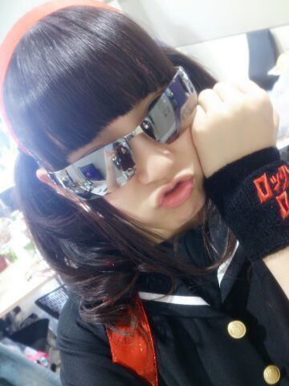
ちーっす└(┐卍^o^)卍ドゥルルル
そして氣志團さんのホスピタリティには
本当に頭が上がらないです。
また機会があったら
その時はもっと成長した姿を見せられるよう
がんばります！
そんな感じかな
コメント返しはまた次回するからね
楽しみに待っててくれたみんな
今日はごめんね(´・ω・｀)
ひめたんの日記の
コメント欄下２ケタに46を踏んだ方へ
手書きでコメ返するコーナー
＼ ひめたん46 ／
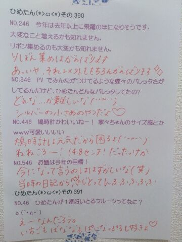
あっ
18さいにはなったけど
これからもびーむするしツインテールもするし
りぼんだって集めるんだからね！
よろしく！ぶんぶん
(＊´・ω・＊)
さて、
日付け替わって
今日から18さい＼(^o^)／
ひとつおねーさんになりました＼(^o^)／
まずは 支えてくださるすべての方へ
いつもありがとうございます
今日までいろいろあったけど
みなさんのあたたかいサポートのおかげで
18さいになりました！
なりましたっても
まだまだ心は17さいだけど
とりあえずなりました＼(^o^)／
18さいの抱負は？とか
みんなに聞かれる前に
答えちゃおうと思います......思いますが
こんな時にすっげー！かっこいいー！
ってなるようなこと言えないのが
ひめたんなので( ´_ゝ`)ごめんねみんな
うーん抱負......そうですね
もっとハングリーにとゆーか
ガツガツとゆーか
向上心を持ってね！さらに！
もちろん今まで全くなかったんじゃないんだけど
もう高校生も最後だしね！
こんなこともっと知りたいなとか
あんなことやってみたいなとか
常に前向きな姿勢を
忘れない1年になったら
いいなーと思います(＊^^＊)
言い切らないところがひめたんらしいです
これが甘えってやつなのか。
あーあと
いろんなことに対して
柔軟に対応できる余裕が欲しいです(＊^^＊)
誰か誕生日プレゼントに
大人の余裕とやらをください(＊^^＊)
大人の余裕......か
うーんなんてゆーか
とてもひめたんには似合わない響き。
それからさらに自分磨きをがんばって
もっともっとたくさーんのひとを
きゅんきゅんさせられるような
キラキラしたアイドルになりたいです＊＊
ひめたんびーむもね
精度をあげたいなーと思ってますよー
世界一りぼんが似合うおにゃのこになりたいよー
そんなわけで
これからも18さいのひめたんを
どうぞよろしくお願いします
いつまでもひめたんと
仲良くしてあげてください(＊>ω<＊)
私自身 今はみなさんに
パワーをもらってばかりだけど
自分からも発信していかなきゃだね！
今日は朝になったら幕張全握＼(^o^)／
がんばります！
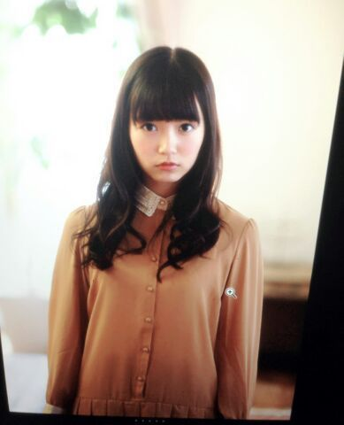
あっそうそう
若月ままさんも誕生日です＼(^o^)／
おめでとうございます
ままさんだいすき！
(＊´・ω・＊)
可愛い可愛い妹ちゃーん黒猫ちゃん( ^O^ )
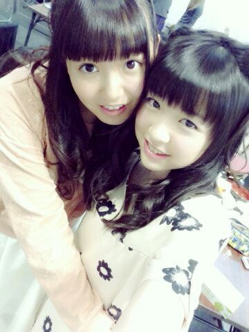
今週末の全握は
かなりん(中田花奈ちゃん)とぺあ！
かなりん、かなりんファンのみなさん
よろしくお願いします(＊^^＊)
かなりんとはよく一緒になるから
お久しぶりの方多いのかなー
ひめたんとも仲良くしてくださいな＊＊
それから、5/3のアンダーライブ
追加募集のお知らせが
公式サイトで発表されました！
ゴールデンウィークの
忙しい時期ではありますが
ぜひ遊びに来てください(´；ω；｀)
アンダーメンバーのファンのみなさんなら
絶対楽しんでもらえるライブにするからね！
今週末のアンダーライブの詳細も
公式サイトで発表されたので
参加するよーって方はよろしくお願いします
楽しみにしててねー＼(^O^)／
そして火曜日は
オフィス男闘呼塾エンターテインメント Presents
氣志團現象2014
「極東ロックンロール・ハイスクール 第弐章」
#34 乃木坂46 vs 氣志團 〜学生服反逆同盟〜
もあります＼(^O^)／
ライブ楽しみ楽しみー♪
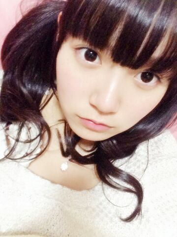
なくなっていた
ぱんださんスマホカバーが
半年ぶりに見つかったー＼(^o^)／

 小さい頃夏に家に来たお中元を見て
小さい頃夏に家に来たお中元を見て
「えっ、おなかもとって何？」って勘違いして
お母さんに聞いたらめっちゃ笑われて
そこで初めてお中元というものを教わって
また一つ賢くなっちゃったってへっみたいな感じの
超絶面白いエピソード教えてください。。。 大した話では全然ないんだけど
小児科を「こじか」って読んで
けらけら笑われたことならありましたねー
懐かしい......(´ω｀)
ひめたんは自分にできるとしたら
妹、弟、姉、兄、豚骨ラーメン(濃厚)
この内誰がいい？ おにーちゃん！
きゅんきゅん王国の課税制度って、累進課税？なんのことをいってるのか
17さいのひめたんには
さっぱりいみがわからないにゃー(´-ω-`)
私。学校の修了式の日にひとことで
ひめたんビームやったら、うけたよー♪
ひめたんも一緒に喜んでくれる？？笑うけた？
いい意味って捉えていいのかな？
やったー＼(^o^)／ありがとう！
この前回転寿司に行って、
友人が食えるものがあまりないと言っていたので
「おまえはひめたんか！」と突っ込んだよ！
どう思いますか？w残念ながら、ひめたんはお魚さん好きじゃないけど
お刺身は好きなんだよー(笑)
ねえねえ、夢でね、ひめたんと
同じクラスになってる夢見た！
でも、なぜか２人で怒られてた
絶対ひめたんのせいだよね？ねえねえねえねえ身に覚えがないんですが
えへーなんでなんで
ひめたんのせいなのかな(＊>ω<＊)
私ボールペン使おうとして
インクが出なかったらすぐ他の使わず
インク出るまで頑張っちゃうんだけど
ひめたんはこういう時どうする？あーもうすごく尊敬する
ひめたんは即刻捨てるひとなのー
一応振ってはみるけどね！
ひめたんの日記の
コメント欄下２ケタに46を踏んだ方へ
手書きでコメ返するコーナー
＼ ひめたん46 ／
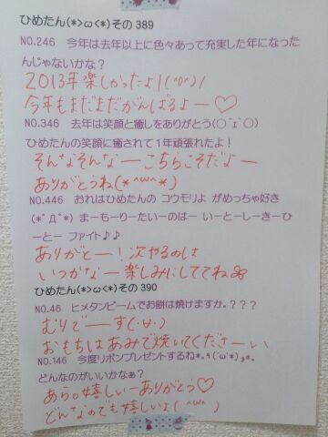
いつもたくさんコメント
ありがとうございます
また時間をとって
ひとつひとつゆっくり読ませてください
いつかまとめて感想書くからねー♪♪
あっそれから
プレゼント受け取りましたっ
ありがとうございました！大事にします！
あしたいいことがありますように。
(＊´・ω・＊)
乃木どこ収録してきました＼(^o^)／
それからヤンジャンさんの撮影に
参加させていただきました＼(^o^)／
どっちも情報解禁なったら
告知するのでよろしくねー
ちょっと待っててくださいな♪
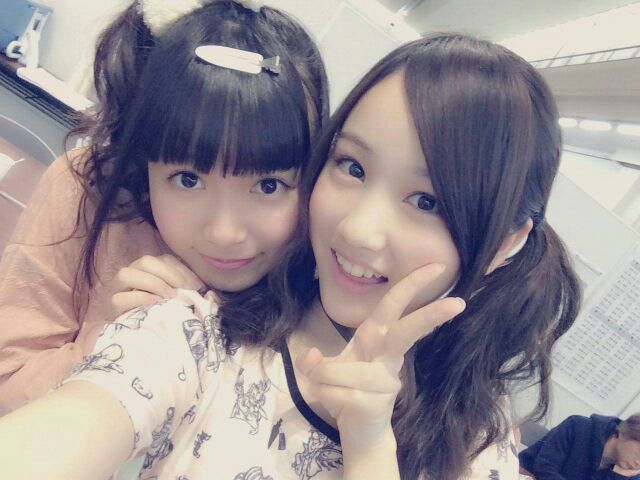
いやーかわいいー(ノ)ω(ヾ)

さて、さてさて
5/3・5/17のアンダーライブ
まだ空きがあるみたいなので(´；；｀)
追加応募できるようにしてもらいます！
みんなでリハがんばってるから
ぜひ遊びに来てほしいなー(´；；｀)
待ってますよー♪
そして
昨年発売したトレカの
第2段が発売決定しました！
年明けくらいに言ってた
いつかお知らせするねーってのはこのこと。
詳しくは公式サイトに飛んでね♪
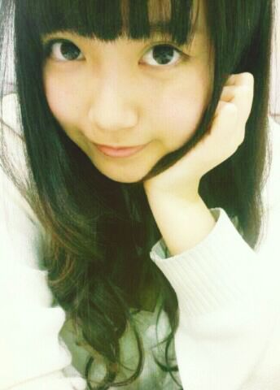
ねねころ(伊藤寧々ちゃん)の日記に
ひめたんがオールバックだったって書いてあって
みなさんいいなーなんて言ってたけど
もうね断言します
みなさんには絶っっっ対に見せない( ´_ゝ`)
とゆーか見せらんない♪んふ
ねねころーいーもん見たねー
貴重だよオールバックひめたん♪♪
あっなんてゆーか
なんだろ今日の質問返しのクオリティ。
別に疲れてないからね(笑)

 ひめたんすきです。
ひめたんすきです。
でも残り携帯の充電が8%です。どうしましょう。
ひめたんビームで回復出来ますか？？無理でーすさよなら／(^o^)＼
ついんてって巻くのとストレート
どっちが良いと思うー？wwwそれぞれの良さがあると思うよー♪♪
ひめたんは巻き率高いです。
ツインテールでくるくるにしてる時は、
巻いてからしばってるの？
しばってから巻いてるのー？？大抵は結んでから巻くんじゃないかな。
メイクさんは輪っかになってない状態の
髪ゴムを使ってらっしゃるので
巻いてから結んでも形は崩れないのですが
ひめたんが個人的にやる時は
結んでから巻かないと巻きがとれちゃうの。
 私の姉がひめたんにめろめろです。
私の姉がひめたんにめろめろです。
どうしたらいいですか？あわよくばあなたもひめたんにめろめろ......
おねーさんよろしくね∩^^∩笑
おねーさんだいすきよー♪♪
ひめたんの質問コーナーに
質問が選ばれる確率と
サマージャンボ宝くじが当たる確率は
どちらが高いですか？言うまでもなく
ひめたんの質問コーナーかと。
DVDのパッケージ開けたら
違うディスクが入ってたってことない？
私これよくやっちゃう...あーありますね、もうねいつもそう。
でもそれって結構真面目に
困るんだよね(´・ω・｀)
いやーめんどくさがりってどうしてこうも
余計な作業を生むのが得意なんだろうねー
 ひめたんは親友が落ち込んでたら
ひめたんは親友が落ち込んでたら
かけよってすぐに声をかけるタイプか？
涙の理由をきかず見守るタイプ？後者かな。
ひめたんは、親友には
そうであってほしいなと思うから。
ひめたんに勇気づけてもらいたいです。(中略)
ひめたん何かお言葉をお願いします本文伏せて書くけどちゃんと届くかな？
うーんそうだな、自分が望むなら
ちょっとずつでも行動にうつしてみたほうが
あとで後悔することないんじゃないかな。
もちろん、難しいことだと思うし
自分にしかわからない辛さとかあると思うのね
でも、一歩踏み出そうとしてるしてる自分を
大切にしてほしいの(＊^^＊)
変わろうって思えたんだからすでに
かつての自分より何倍も前向きなんだよねきっと。
時間はいくらだってかけてもいいんだから
少しずつ少しずつやってみよう！
相談してくれてありがとう＊
応援してます、ひめたんもがんばるね。
ひめたんの日記の
コメント欄下２ケタに46を踏んだ方へ
手書きでコメ返するコーナー
＼ ひめたん46 ／
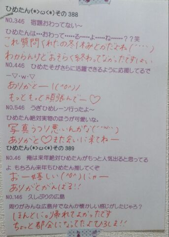
印刷のミスで
紙がちょっとあれです
ごめんね(´・ω・｀)
いつもコメントたくさん
ありがとうございます
運営さんブログの「誰か」は
かなりんだよー＼(^o^)／
かなりんほんと髪伸びたねー
まりか？って解答が多かったでーす
あっそうそうなんかねコメント読んでるとね
みなさんの質問のクオリティが高すぎて
ひめたんに何を聞いたら採用されるか
わかりませーん＼(^o^)／
って声が非常に多くて。
いやーほんとにね
ひめたんもコメント読んでて
ここは天才の集まりですかってたまに思うけど
そんなに気負わないで
何でも気になったこと質問してくださいな(＊^^＊)
気軽に思ったこと書いて
1対1じゃなくてみんなと気持ちを共有できる
そんな場になれたら嬉しいなー
毎回楽しみに読んでるよー♪♪
(＊´・ω・＊)
京都2日間 ありがとうございました！
1日目 全国握手会
生まれたままで
初ライブパフォーマンス( ^O^ )
新制服も新鮮だったかな♪
握手はみおちゃん(堀未央奈ちゃん)とぺあ
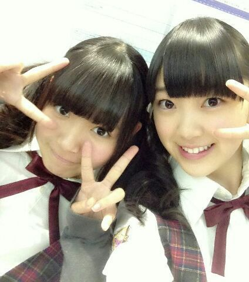
巻きツインお揃っちー(＊´ω`＊)
こんなふうに やさしくて気が利いて
ほわほわしてるみおちゃん好きよー
そしてみおちゃんファンの方
優しくてフレンドリーで楽しかったです
仲良くしてくださってありがとうございました！
運営さんブログの
中元日芽香、伊藤寧々、永島聖羅と「誰か」
みなさん誰かわかりますかー？
結構難問かも( ´ ▽ ` )んふ
2日目 個別握手会
お洋服はこんな感じです
画質が恐ろしく粗いですひゃっはー
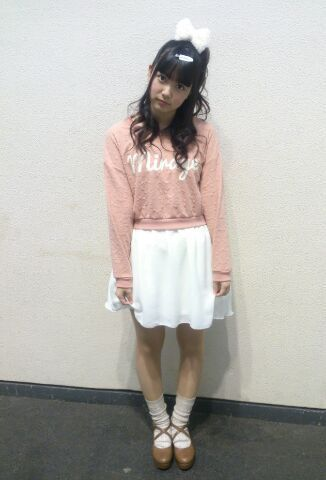
ヘアはひめたんりぼんに
4部 ハーフアップくるくる
5部 ポニーテール
写メは4部◎
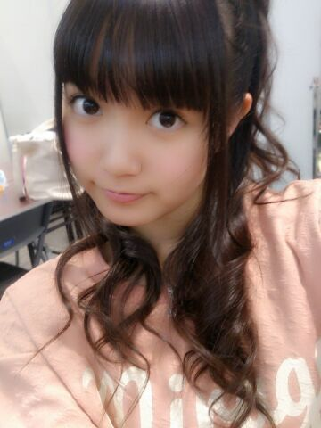
わかるかな？
全握は前髪長かったのを
がんばってくるってしてたけど
個握の前に切ってもらいました！
そして2日間の握手会で思ったのが
ひめたんびーむ効かない人が
増えてきたきた(´・ω・｀)
「ひめたんびーむ！」
「でてないじゃん！」
「でーてーるー！」
ってゆーあの乃木どこの場面を
何回再現したことか。
あと、おにゃーのこ率が
高くてびっくり(゜ω゜)嬉しい悲鳴。
アイドルの握手会って
来るのに勇気がいるのかなーって
ひめたんは思うんだけど
そんな中会いに来てくれて
ほんとに嬉しいですありがとうねー
みんなかわいくてこっちまでほっこり＼＊／
もちろんぼーいずのみんなも
いつもありがとうね！
ぼーいずだけどひめたんの好みに合わせて
ぴんく着てみたり
蝶ネクタイしてみたりしてくれて
なんかもう愛されてるなひめたん(´；ω；｀)うう
初めましての方もたくさんいらっしゃって
嬉しい！これからよろしくね！
ひめたんその400の
名札をダウンロードして
よかったらお揃いで作ってみてね☆
と言いながら今日も
5部でつけるの忘れてた(´nωn`)ぺろ
そしてホテルのぺあは
ねねころ(伊藤寧々ちゃん)でした
ねねころ3日間ありがとうねー◎
昨日の夜は時間がいっぱいあったから
ふたりでめーちゃお話したー
楽しかったーよー
最後に
プリンシパルtroisの
キービジュアルが公開されました！
ひとりひとりの個性の汲み取って
デザインしていただきました
ひめたんのテーマは
「ひめたんりぼん」「ひめたんびーむ」よー
背景がぴんくなのもステキですね( ^O^ )きゃぴ

 ところでおくばひめー！
ところでおくばひめー！
今日仙台は雪が結構降ったんだけど
きゅんきゅん王国は大丈夫だったー？ちょっとまってまってまって( `ω´ )
ねーおくばひめってやだ！
かわいくない！却下！
じゃあボクにもアダ名をつけさせてください。
「くそえくぼ」！！
どうでしょう？^ ^うわああぁぁああぁあん。゜(゜´Д｀゜)゜。
ひめたんって一流のアイドルなのに、
何でそんなに親しみやすいのー？一流のアイドルじゃないんじゃない？え
えくぼひめ は お風呂の時 どこから洗うの？
手？足？それとも... \(//∇//)\あたまでーす\(//∇//)\
きゃー恥ずかしー！
なんだこれ(笑)
 ひめたんが「ブログ」じゃなく
ひめたんが「ブログ」じゃなく
「日記」と云うのは拘り？
日記の方がより密な感じがするからかな？ひめたんにとっては
そっちの方が正確な表現のような気がして
何となく日記って呼んでます＊
写メのね、寝てるひめたんが
天使すぎて食べちゃいたいんだけど、
食べていーい ??にゃー(「・ω・)「
ひめたん46は
今日はおやすみさせてください。
いつもたくさんのコメントありがとうございます
前回は特に多くてびっくりしちゃった！
みんなが質問に答えてくれた＼(^O^)／
たまには逆の立場に立ってみるのも
悪くないですなー
なんてゆーかみんなのレベルが高すぎて
ひめたん拾いきれるかわからんけど
ひとりで楽しみながら読みましたぞー
ひめたんのこと好きよって方が
たくさんいらっしゃって安心したよー♪
そうです、わかりきってて聞いたのよー
そのわりには「別にー」って方も
(結構)いらっしゃったけど
照れちゃって照れちゃって(＾ω＾)んふふ
好きな歌はねー
全部！って方もいらっしゃって
挙げてくださる曲も結構ばらばらで
乃木坂ちゃんは名曲が
いっぱいあるんだなあーって思った＊
ひめきゅんさんは思い出も含めて
バレッタとか海流の島よとか
涙がまだ悲しみだった頃とか多かったかなー♪
みんながせっかく教えてくれたから
統計とろうと思ってたんだけど
ちょっと3日じゃ厳しくて( >_< )ごめんね
とゆーことで
質問に答えてくださったみなさん
ありがとうございました♪
ひめたんの立場はいかがでしたー？
大変だった？楽しかったー？
えってか何だかひめたんも楽しいから
これからはちょこちょこみんなに
質問しようかしら。
(＊´・ω・＊)